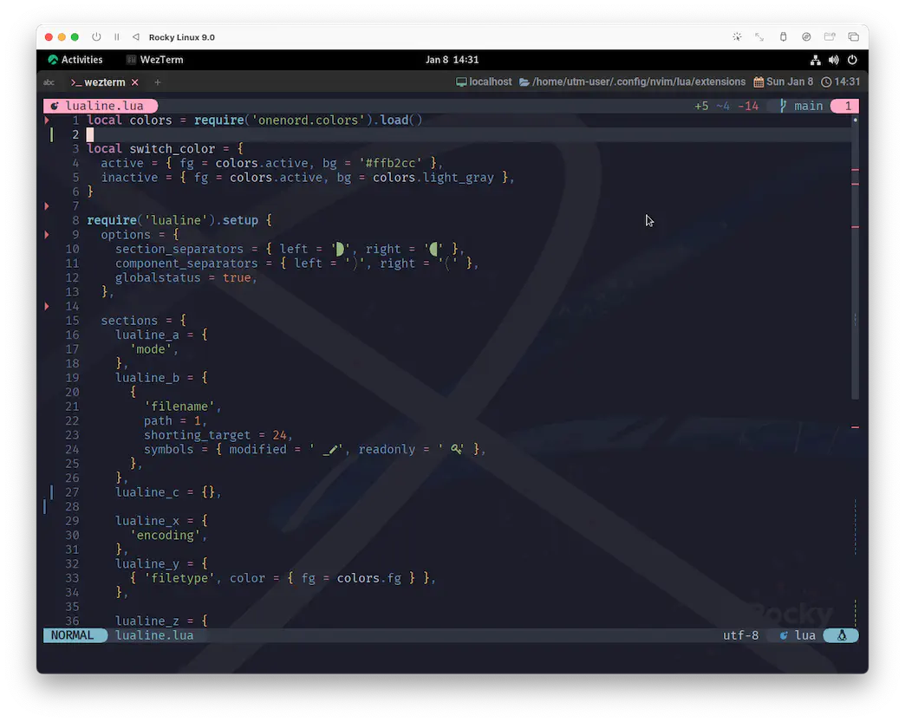
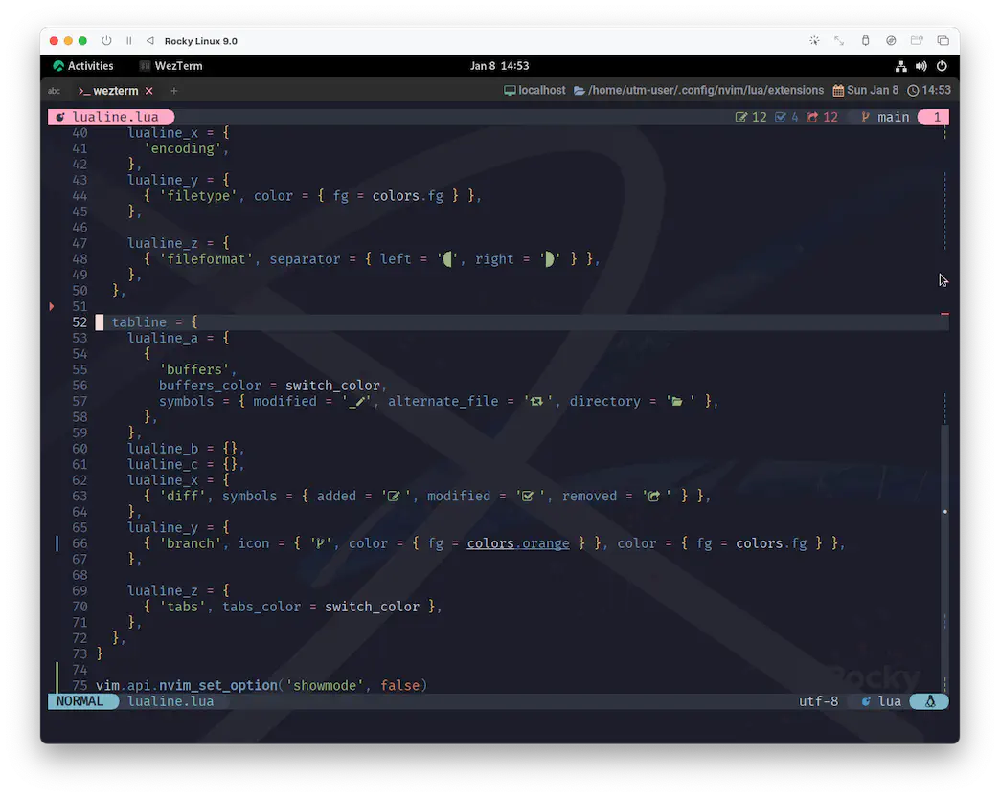

lualine.nvim Part Ⅲ
2023年に帰る前に、lualine.nvimに関してもう一個だけやっておきたいことがあって、それがTabLineなんですね。
...ややこしいですけど😮
I gave you explicit instructions not to come here, but to go directly back to 2023.
ここには来ないで、そのまま2023年に戻れと明確な指示をしたはずだ。
...されてないですけど😅
But it's good to see you.
だが また会えて嬉しい。
...❗😭
TabLine
Cinema Part もそこそこに、早速いっちゃいましょう。
local colors = require('onenord.colors').load()
local switch_color = {
active = { fg = colors.active, bg = colors.mypink },
inactive = { fg = colors.active, bg = colors.light_gray },
}
require('lualine').setup {
--[[
options = {
...
},
sections = {
...
},
]]
-- sections と同列に追記する
tabline = {
lualine_a = {
{
'buffers',
buffers_color = switch_color,
symbols = { modified = '_', alternate_file = ' ', directory = ' ' },
},
},
lualine_b = {},
lualine_c = {},
lualine_x = {
'diff'
},
lualine_y = {
'branch'
},
lualine_z = {
{ 'tabs', tabs_color = switch_color },
},
},
}
switch_colorの中で、colors.mypinkというものがあるんですが、これはonenord.nvimのcustom_colorsに定義したオリジナルカラーです。
onenord.nvim - Install & Config
ご自身のお好きな色を入れてもらえればオッケーです。
で、これを反映させると、画面の上部にTablineが表示されます。

カスタマイズの内容は、前回のsectionsと全く同じフォーマットなので、イメージできますよね😉
それぞれのセクションで使用するコンポーネントの指定と、あとはアイコン・カラーなんかを変えてます。
lualine_xのdiffとlualine_yのbranchについては、ひと手間加えるともっと良いものが出来上がるので、次の項で😆

Using external source
前回出てきた:h lualine-Available-componentsも併せて思い出してほしいんですが、
lualine.nvim単体でもgitのbranchとdiffの表示に対応しているんですね。
しかし、ここで登場するのがgitsigns.nvimです❗
gitの扱いに関して彼の右に出るものはいません😆
for git-diff
If you have other plugins installed that keep track of info. lualine can reuse that info.
もし他にトラッキングを管理しているプラグインをインストールしているのなら、lualineはその情報を再利用することができます。
And you don't need to have two separate plugins doing the same thing.
なので、2つそれぞれのプラグインで同じことをする必要はありません。
local function diff_source()
local gitsigns = vim.b.gitsigns_status_dict
if gitsigns then
return {
added = gitsigns.added,
modified = gitsigns.changed,
removed = gitsigns.removed
}
end
end
lualine_x = {
{ 'diff', symbols = { added = ' ', modified = ' ', removed = ' ' }, source = diff_source },
},
for git-branch
If you have other plugins installed that keep track of branch info. lualine can reuse that info.
もし他にブランチ情報を持っているプラグインをインストールしているのなら、lualine はその情報を再利用することができます。
lualine_y = {
{ 'b:gitsigns_head', icon = { '', color = { fg = colors.orange } }, color = { fg = colors.fg } },
},
Wrap Up
「わざわざ自分で計算しなくても、gitsigns.nvimに教えてもらえばいいよねー❗」っていうのが、
lualine.nvimの wiki にある tips でした😆

内部の処理的にも、きっと綺麗になっているはずです☺️
WinBar
わたしはまだちょっと用途を見出せていないというか、Tablineだけで満足しちゃってるので使ってないんですが、
Winbarというものがあって、これもやっぱりlualine.nvimを使って設定できます。
From neovim-0.8 you can customize your winbar with lualine. Winbar configuration is similar to statusline.
neovim-0.8 から lualine で winbar をカスタマイズすることができるようになりました。Winbar の設定は statusline に似ています。
The End
ああ、これで心置きなく2023年に戻れそうです。
戻ったらpackerやみんなにも教えてあげよう☺️
use {
'nvim-lualine/lualine.nvim',
config = function() require 'extensions.lualine' end,
requires = {
'nvim-tree/nvim-web-devicons', 'rmehri01/onenord.nvim', 'lewis6991/gitsigns.nvim',
},
}
It means your future hasn’t been written yet.
きみの未来はまだ白紙なんだよ。
No one’s has. Your future is whatever you make it.
他の誰でもない。きみの未来はきみが描くんだ。
So make it a good one!!
だからこそ良いものにしよう!!